Exact quotes. A verifiable restart.
Add a source, inspect its citation, save and reopen it in a separate process.
Your documents. Exact quotes. A restart you can check.
Public tools for local work
and independent inspection.
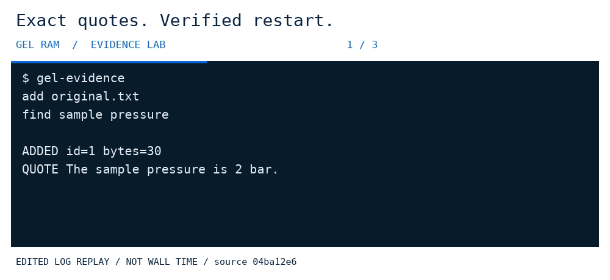
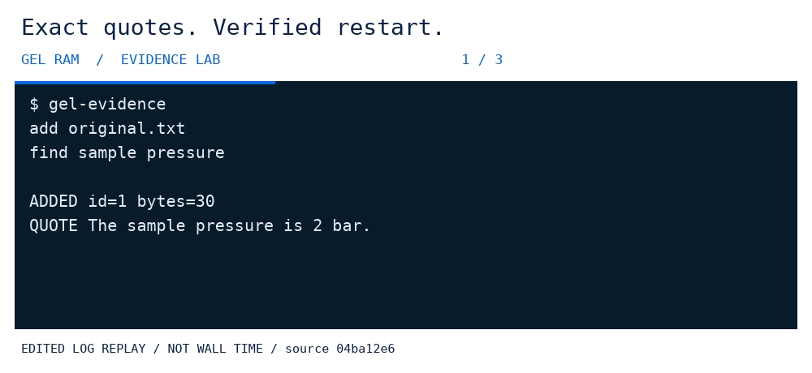
Inspect the source. Keep the evidence.
Load your text, retrieve exact quotations and check that a saved collection reopens with the expected bytes.
Source correspondence is not source truth. This is phrase retrieval, not unrestricted question answering.
Six workflows. Their original evidence.
These are edited replays of recorded public command output, not product screenshots or new benchmark runs. Open each image at full size to read the terminal text.
Add a source, inspect its citation, save and reopen it in a separate process.
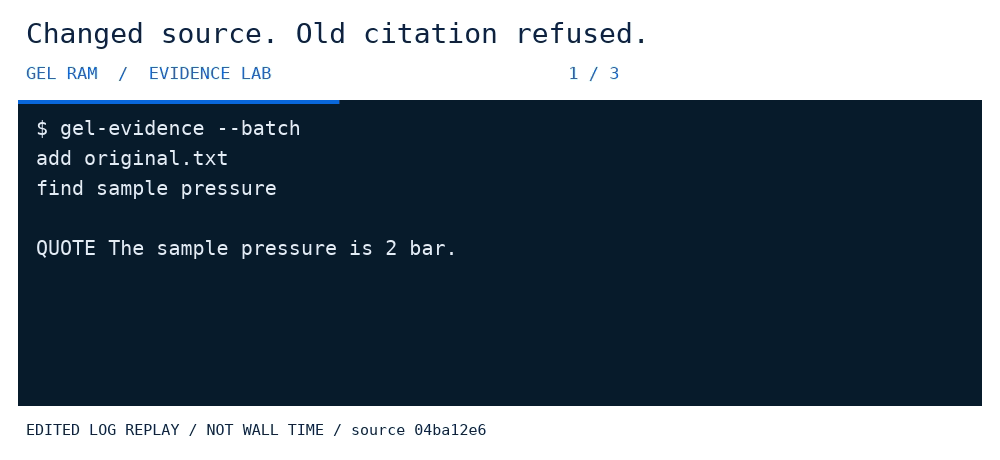
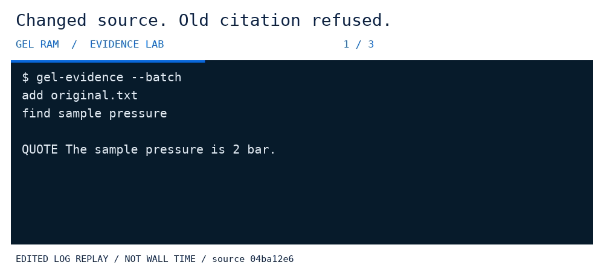
Replace the source and inspect the refusal of the previous result.
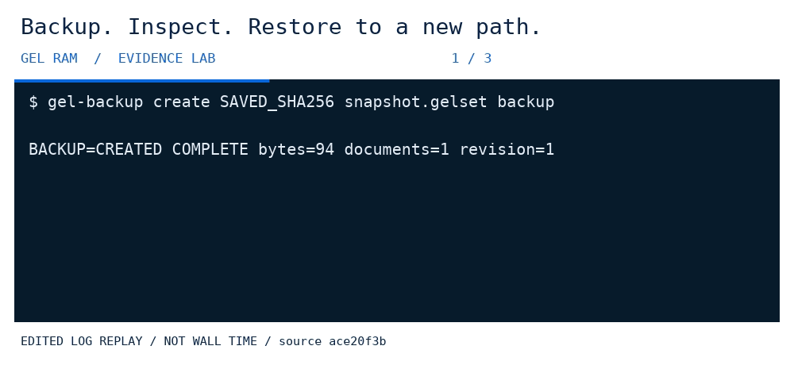
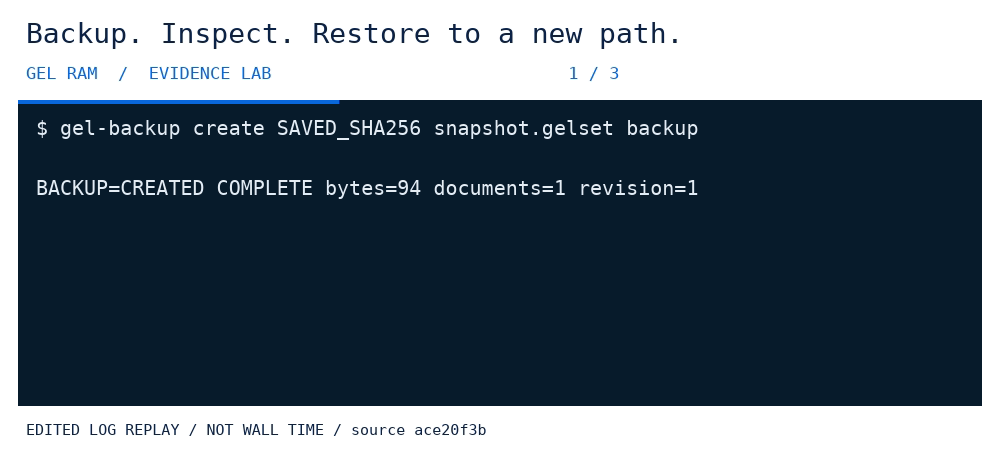
Restore into a new path and check equality with the saved snapshot.
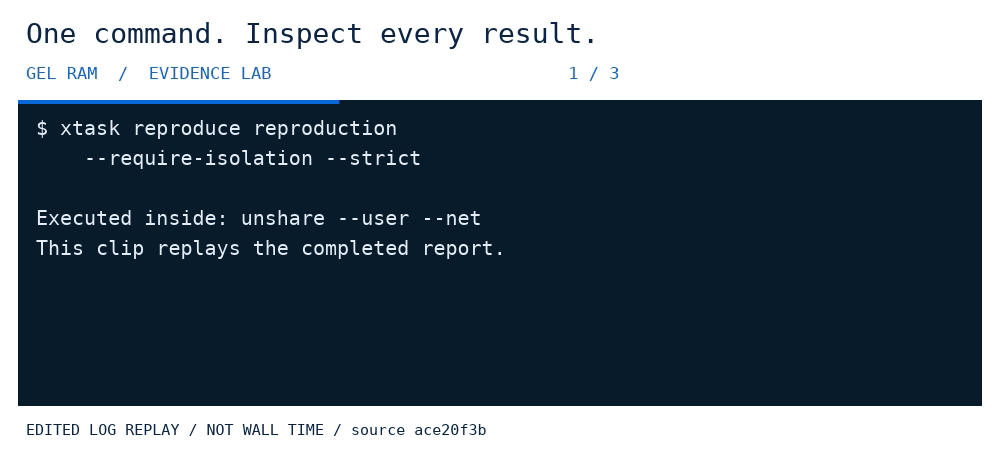
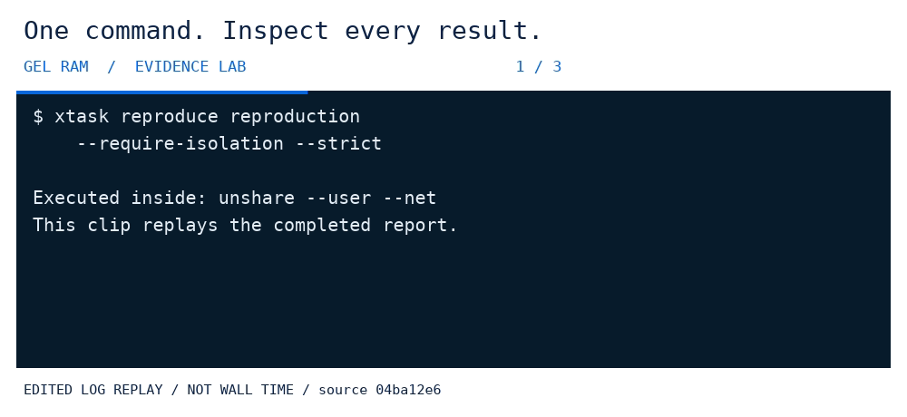
Read the recorded strict reproduction result and its declared scope.
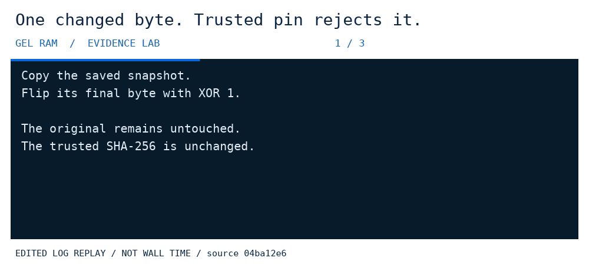
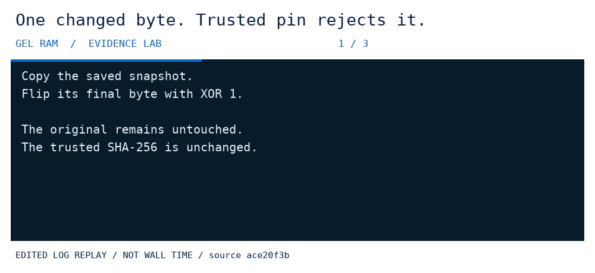
A changed-byte copy is rejected against the original trusted hash.
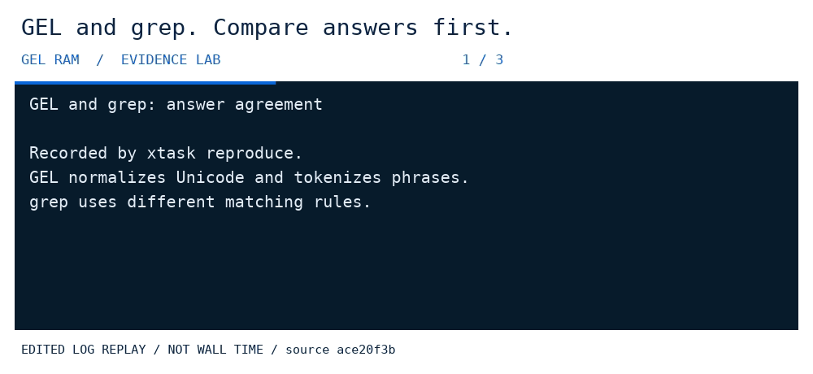
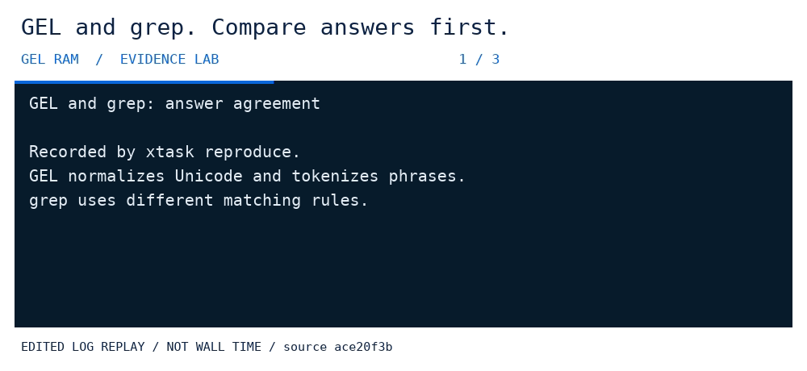
See matching and differing answers. No universal speedup is claimed.
Transcripts and retained hashes accompany the previews.
Inspect refusal and incomplete states, not only success.
The CLI uses your local documents. No automatic upload.
Commands, sources and limitations remain linked.
Drawn from this checkout
The property map, the CI exclusion list and the committed mutation report are read when the images are built; the read-only presentation check fails if they drift.
Try the public tool
In a new checkout, run each line separately. Setup needs a network; the demo uses locked offline dependencies.
git clone https://github.com/Gelram-project/gel-ram.git
cd gel-ram
git checkout v0.5.0
git rev-parse HEAD
rustup toolchain install 1.85.0 --profile minimal --component rustfmt --component clippy
cargo fetch --locked
cargo run --locked --offline --release -p gel-live-lab --bin gel-evidence -- --demoExpected marker: GEL_EVIDENCE_DEMO=PASS. This is a result to check, not a pre-approved outcome.
Check the declared scope
cargo run --locked --offline -p xtask -- verify
cargo run --locked --offline -p xtask -- reproduce ../gel-repro-newUse a new output directory outside the checkout. Read failed, skipped and unmeasured steps. Cargo offline mode is not system-wide network isolation.
Go beyond the preview
Documentation links open the pinned source on GitHub. Viewing this local page loads only adjacent assets, with no scripts, trackers or remote fonts.
This is a documentation presentation, not the application interface. It belongs to the v0.5.0 source. The older GIFs retain the source revision declared in their original manifest. Presentation changes do not retime them, certify a release or close outstanding human review.
Snapshots and backups are plaintext. A hash is not encryption, a signature or proof that a source is true. Different search tasks and matching semantics are not interchangeable benchmarks.
GEL-owned material remains under GEL RAM Noncommercial Reciprocal License 1.0. Read the licensing guide, third-party notices and media rights. This page grants no additional rights.